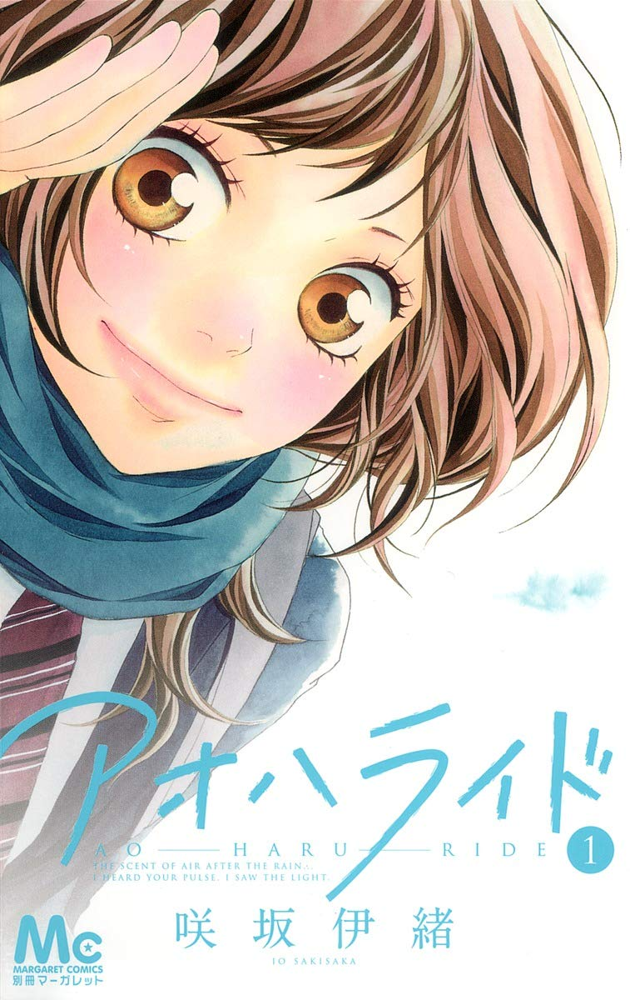
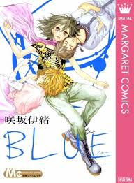

Sakisaka Io
咲坂伊緒

A photo of Sakisaka Io smiling.
Io Sakisaka is a Japanese manga artist and character designer borned June 8th, 1975 in Tokio, Japan. She debuted in 1999 with the short comic Sakura, Chiru! and since has been known for her series Strobe Edge, Ao Haru Ride, and Love Me, Love Me Not.
Published Manga

